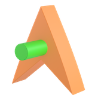
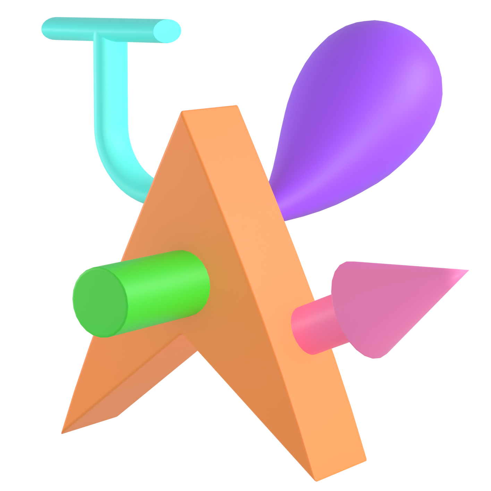
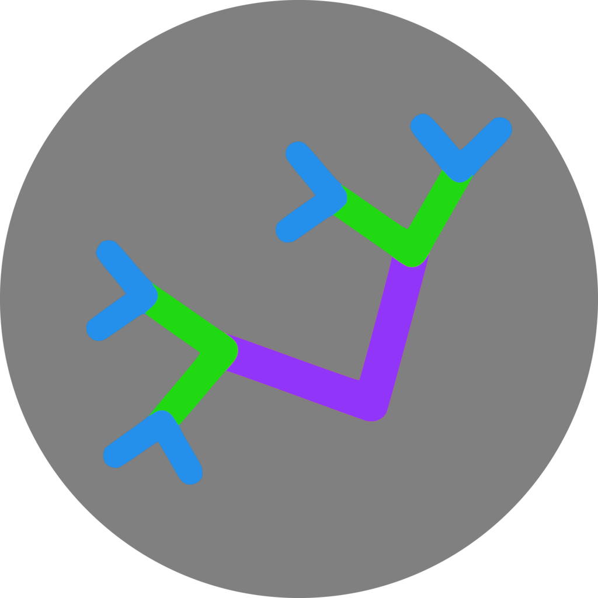
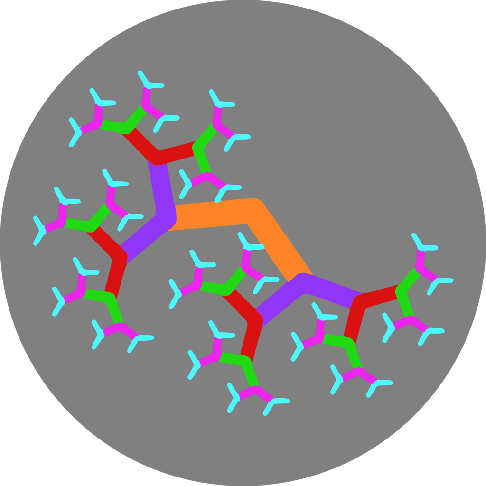

11 Procedure
Please adhere to the following specifications for conducting this study. If any of the following technical specifications are not possible for your lab, please contact the MB5 leadership team (mb5@manybabies.org) before beginning data collection to inform us of your planned deviation and the reason for it.
11.1 Overview
During the experiment, infants will be seated on their caregiver’s lap or in a high-chair or car seat (whichever option corresponds to a lab’s standard procedure for testing infants, as reported in the pre-data-collection survey).
Each baby will be presented with a series of 12 trials. Each trial is preceded by an attention-getter and made up of a familiarization phase followed by two test phases.
There are two versions of the experiment:1
- Fixed-length, in which the duration of the familiarization phase is pre-established (5s, 10s or 15s)
- Infant-controlled, in which the familiarization phase lasts until the infant accumulates the specified looking time (5s, 10s, or 15s). In both versions, the duration of each test phase is fixed at 5s.
1 Participating labs are encouraged to use an infant-controlled procedure, if possible. See Section 11.3 for more info.
Trial schematic:
11.2 Trial initiation
This phase draws infants’ attention (back) to the screen prior to the familiarization using the “laughing baby” stimulus. The trial is initiated when the infant fixates the screen (or a maximum of 10s has elapsed).
11.3 Familiarization Phase
In the familiarization phase, one stimulus is presented centrally on the screen. There are a total of 12 familiarization events for each infant that vary across three dimensions (see table 11.1):
- Stimulus class (Fribbuli or Fractals)
- Complexity level (low or high); and
- Familiarization time (5s, 10s, or 15s)2
2 Familiarization time specifies the duration of the familiarization phase (fixed-length design), or the duration of accumulated looking time needed to end the familiarization phase (infant-controlled design).
The order of these trials will be counterbalanced along a number of dimensions across participants and labs.
| Event | Familiarization Time (s) | Stimulus Class | Complexity Level | Example Stimulus |
|---|---|---|---|---|
| 1 2 3 |
5 10 15 |
Fribbuli |
Low |
 |
| 4 5 6 |
5 10 15 |
Fribbuli |
High |
 |
| 7 8 9 |
5 10 15 |
Fractals |
Low |
 |
| 10 11 12 |
5 10 15 |
Fractals |
High |
 |
Infant-Controlled Familiarization
If your lab is running the infant-controlled version of the study, infants may accumulate the required familiarization time across multiple looks before advancing to the test phase. The familiarization stimulus will remain on the screen until the infant has looked at the stimulus for the specified duration (as determined by an experimenter coding infant looking in real time).
We will additionally implement a maximum trial length criterion: if infants do not accumulate the required looking time within twice the specified familiarization duration (i.e., 10, 20, or 30s), the familiarization phase will end.
Fixed-Length Familiarization
If your lab is unable to run an infant-controlled design, then you will present the familiarization stimulus for a specified duration (5, 10, or 20s) before advancing to the test phases.
11.4 Test Phase
In each test phase, the object seen during familiarization (the familiar object) is presented side-by-side with a novel object. The location (left/right) of the familiar and novel stimuli will be switched in the two test phases (e.g., if the familiar object appears on the left in the first test phase, it will appear on the right in the second test phase).
Once the familiarization criterion has been reached (either via accumulated looking or fixed-length presentation), the infant will be presented with a central-fixation stimulus (looming circle). Once the infant fixates the screen (or a maximum of 5s has elapsed), the first test phase will begin. Each pair of test stimuli includes the stimulus to which the infant was familiarized (the familiar object) and a previously-unseen stimulus (the novel object) from the same stimulus class (Fribbuli or Fractals) and complexity level (low or high) as the familiar object. Infants will view the test stimuli for a total of 10s, separated into two sub-phases. They will be presented with the familiar and novel stimulus for 5s after which a central fixation stimulus will be presented. The infant will then view the second 5s test phase, which uses the same two stimuli but with the location flipped (i.e., the image that was on the left in phase 1 will be on the right in phase 2).